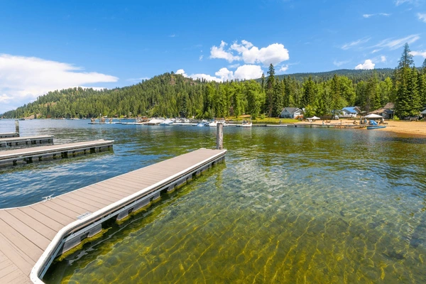

One of my favorite cities is Coolin in Priest Lake, Idaho! This is a place I have gone to since childhood, as my aunt has a cabin right on the lake. It is a beautiful area full of fun lake activities, a very small town, and wildlife such as moose, mountain goats and bears. Though very small, Coolin has a few small shops, the best huckleberry icecream and some great restaurants nearby.
Coolin often hosts holiday parades throughout the year, including their Memorial Day Parade, Fourth of July Parade, and even the upcoming Spring Festival Parade. Parades include arts and crafts booths, food trucks, and pie sales!
Look here for information on upcoming events.
Opened in 1927, the Leonard Paul store still hosts guests today, with delicious icecream, knick-knacks, and a variety of essentials and Priest Lake merchandise.
Information on the history of Leonard Paul can be found here
If you are coming to visit and don't have a boat or water toys, you are welcome to rent them in Coolin. They have a boat dock to take off from, and a place to fill up gas.
A popular company for rentals in Coolin can be found here!
In the old-growth cedar forests of the Selkirk Mountain Range near Coolin, you can find flat rocks flowing with mountain water. The rocks create a natural water slide that end in a small pool of icy water.
More about the natural rockslides can be found here